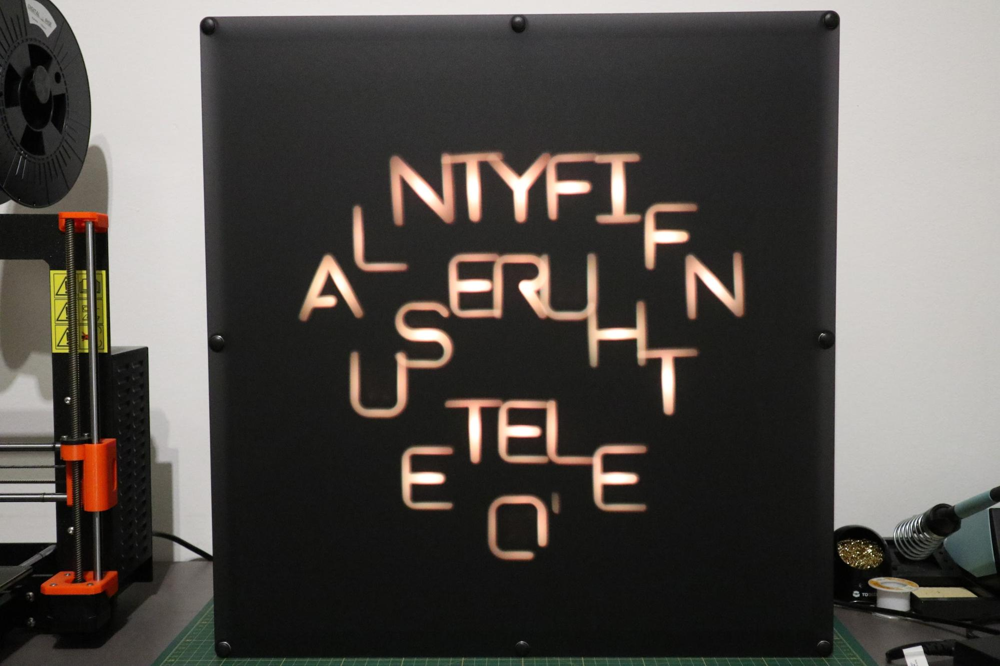
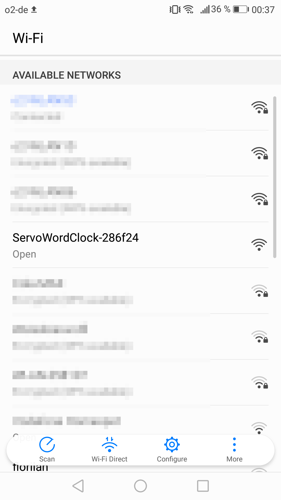
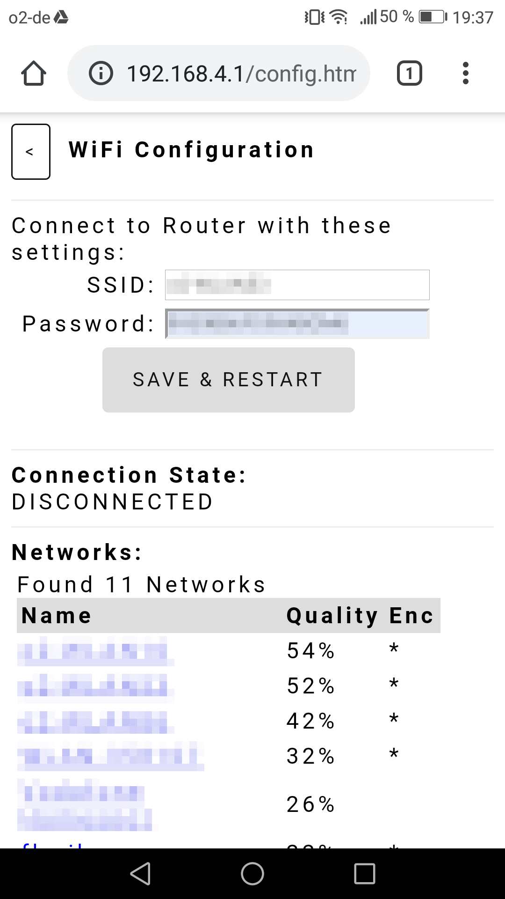
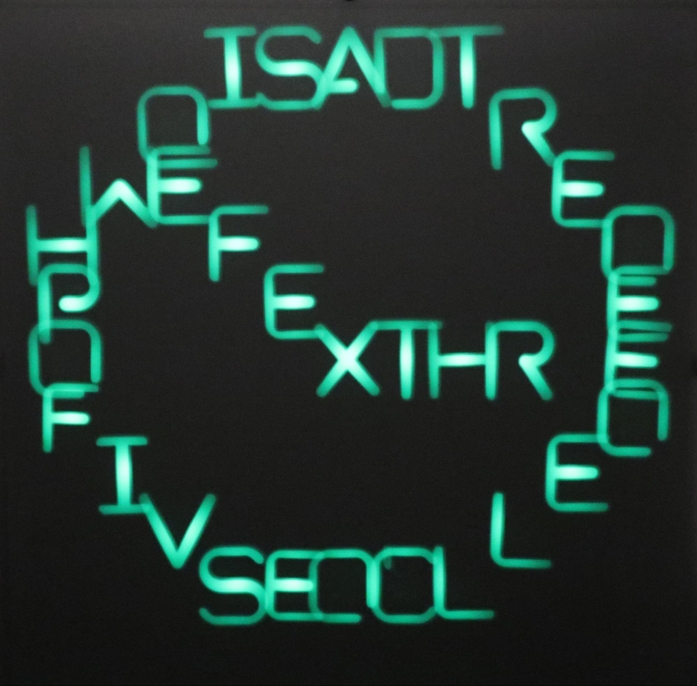
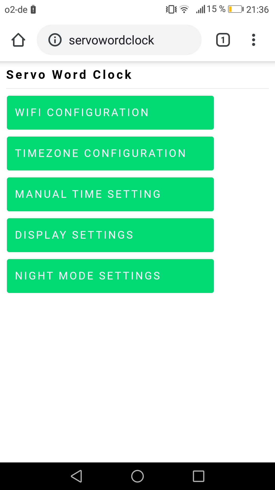
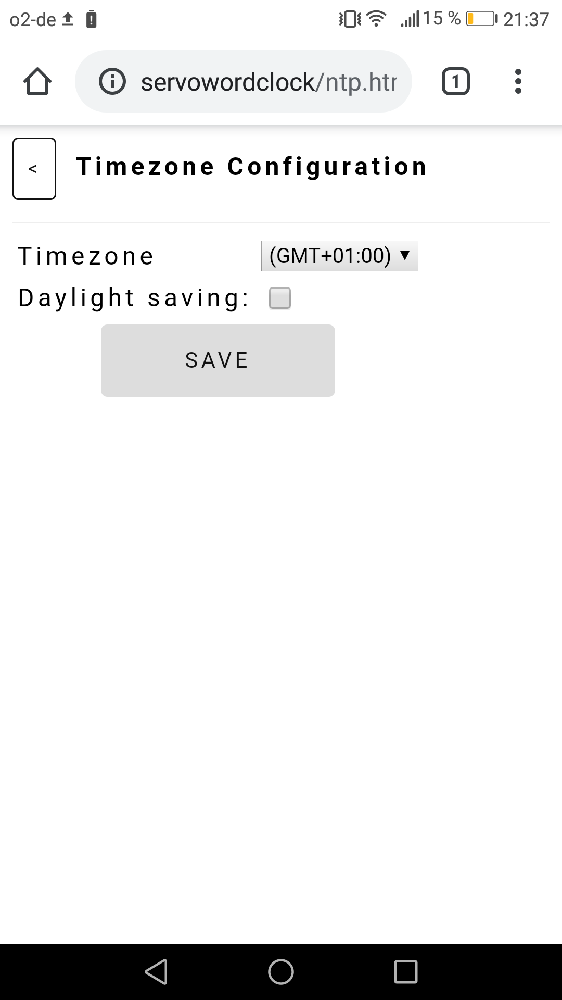
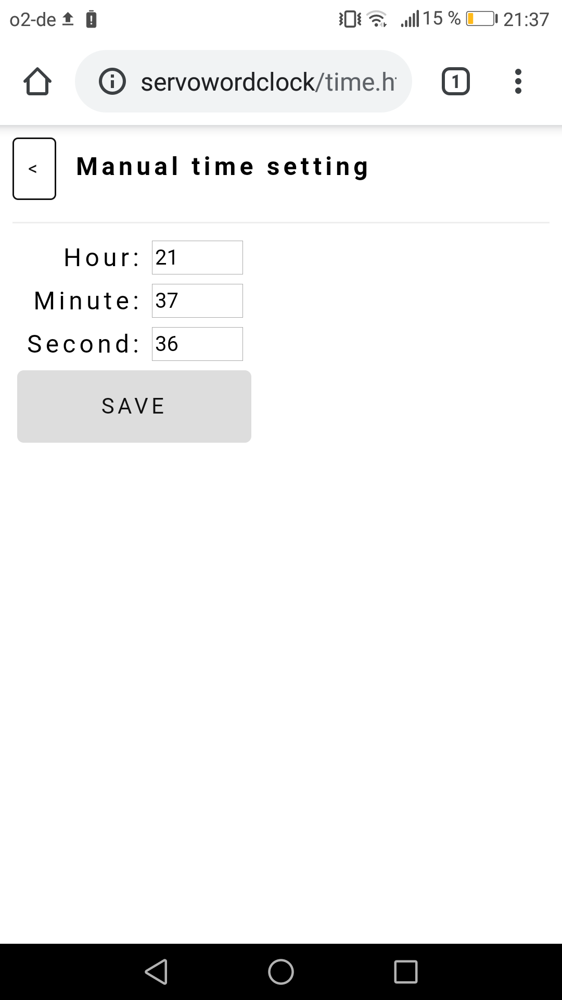
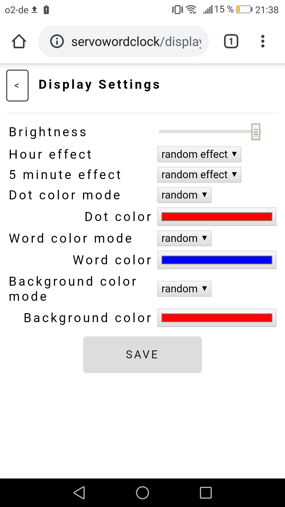
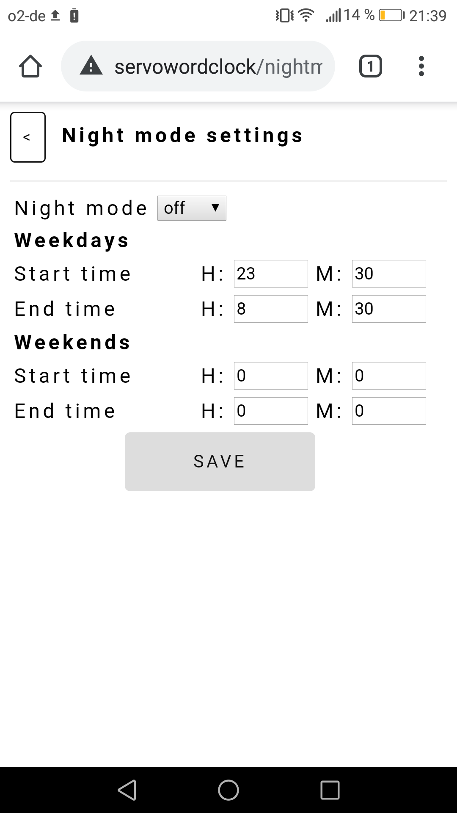

User Manual
Introduction
Setting up the Clock
Access User Interface
Timezone Configuration
Manual Time Setting
Display Settings
Night Mode Settings
Introduction
The Servo Wordclock was designed to be connected to your local WiFi and can be controlled via a web based user interface. With internet access the clock will also automatically keep time by synchronizing to an NTP server.
If there is no WiFi network available the clock will create a WiFi access point to which other devices can connect.
The user interface can be used to control all clock functions like WiFi configuration, time setting, display brightness, color and animations.
All settings will be permanently stored on the clock’s non-volatile memory.
Setting up the Clock
- Connect the clock to the included power supply
- To turn on the clock use the switch located on the lower left side. The clock will need about 30 seconds to initialize all servo motors
- When the clock was switched on for the first time it will create a WiFi access point. When the access point is active the clock will show a yellow WiFi symbol on the screen

- Search for new networks on your PC or mobile device, you should see a network named ServoWordClock-xxxxxx to which you can connect without password
- Once you are connected to the clock’s access point open a web browser. In the address bar type in the IP address 192.168.4.1. this will open the clock’s user interface
- Click on the WIFI CONFIGURATION button this will bring you to the WIFI settings page

- After the network search has finished select your local WiFi network from the list and enter the password. After that click SAVE & RESTART to save the settings to the clock’s memory and reboot
- After the clock has restarted it will try to connect to your local WiFi. When the connection was successful a green clock symbol will be shown on the screen until the time has been synchronized with the NTP server
- If the clock cannot connect to your WiFi network it will revert to opening an access point
Access User Interface

- If the clock is connected to your local WiFi you can access the user interface from any PC or mobile device within that network via your web browser.
On Windows, OSX, Linux and iOS type servowordclock.local in your address bar.
On Android systems just type servowordclock instead[1]
- If the clock has no WiFi connection you can access the user interface by connecting to the clock’s own access point (see Chapter 2)
- If the clock loses its WiFi connection during operation it will automatically try to reconnect. When the connection still fails the clock will restart and open an access point
Timezone Configuration
- Use the TIMEZONE CONFIGURATION page to enter your local timezone. If your country observes daylight saving time also check the daylight saving box. Clicking SAVE will update the timezone and store it to the clock’s memory
Manual Time Setting

- If your clock is not connected to the internet or cannot synchronize to the NTP server you can use this page to set the time manually[2]. The time will only be updated after clicking SAVE
Display Settings

- The DISPLAY SETTINGS page can be used to change several options on how the clock displays time
- Brightness: adjusts the brightness of all LEDs
- Hour effect: selects the animation that is used to display the time every full hour. Four different effects can be used typing, fade-in, fade-out, colormix. When set to random effect one of the four effects will be randomly selected
- 5 minute effect: selects the display animation that is shown every 5 minutes. Options are similar to Hour effect
- Dot color mode: when fixed is selected the color of the minute dots can be specified in the next row. Selecting random will use a random color each time the clock updates time
- Dot color: color of the minute dots when fixed is selected above
- Word color mode: changes how the color of all words that are used to display the time is selected. Options are similar to Dot color mode
- Word color: color of words that display the time when fixed is selected above
- Background color mode: changes how the color of all background letters that are not used to display the time is selected. Options are fixed, random and cycle. The latter will slowly cycle the color of all background letters
- Background color: color of all background letters when fixed is selected above
Clicking SAVE will update the display and store all settings to the clock’s memory
Night Mode Settings
- The NIGHT MODE SETTINGS can be used to either switch of the servos or the entire clock for certain periods, e.g. during night or work hours. This will increase lifetime of the servos and may also be used to avoid being disturbed by the noise of the servos at nighttime
- Night mode: selecting silent only switches off the servos, LEDs will still light up. The option off turns off the entire clock
- Start/End time: can be used to specify the start and end time when night mode is active. Separate periods for weekdays and weekends can be selected
Clicking SAVE will update the settings and store them to the clock’s memory
[1] The user interface can also be reached by using the clock’s IP address. The clock does not use a fixed IP but one automatically assigned by your router. Please see the documentation of your router on how to find out the IP address of connected devices or follow this tutorial.
[2] When the time is not regularly updated via NTP timekeeping may not be accurate